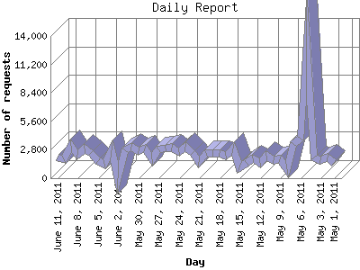

The Daily Report identifies the activity for each day within the reporting period. Remember that one page hit can result in several server requests as the images for each page are loaded.

| Day | Number of requests | Number of page requests | |
|---|---|---|---|
| 1. | May 1, 2011 | 1,533 | 105 |
| 2. | May 2, 2011 | 2,038 | 123 |
| 3. | May 3, 2011 | 1,763 | 117 |
| 4. | May 4, 2011 | 2,002 | 123 |
| 5. | May 5, 2011 | 13,187 | 561 |
| 6. | May 6, 2011 | 3,876 | 253 |
| 7. | May 7, 2011 | 3,333 | 184 |
| 8. | May 8, 2011 | 929 | 87 |
| 9. | May 9, 2011 | 1,904 | 156 |
| 10. | May 10, 2011 | 1,758 | 89 |
| 11. | May 11, 2011 | 2,222 | 121 |
| 12. | May 12, 2011 | 1,537 | 80 |
| 13. | May 13, 2011 | 1,977 | 124 |
| 14. | May 14, 2011 | 1,545 | 121 |
| 15. | May 15, 2011 | 1,070 | 99 |
| 16. | May 16, 2011 | 2,944 | 219 |
| 17. | May 17, 2011 | 2,190 | 156 |
| 18. | May 18, 2011 | 2,520 | 144 |
| 19. | May 19, 2011 | 2,458 | 142 |
| 20. | May 20, 2011 | 2,453 | 173 |
| 21. | May 21, 2011 | 1,553 | 99 |
| 22. | May 22, 2011 | 2,513 | 148 |
| 23. | May 23, 2011 | 3,115 | 196 |
| 24. | May 24, 2011 | 2,585 | 141 |
| 25. | May 25, 2011 | 3,023 | 182 |
| 26. | May 26, 2011 | 2,927 | 144 |
| 27. | May 27, 2011 | 2,877 | 171 |
| 28. | May 28, 2011 | 1,893 | 116 |
| 29. | May 29, 2011 | 2,943 | 140 |
| 30. | May 30, 2011 | 2,657 | 119 |
| 31. | May 31, 2011 | 3,076 | 142 |
| 32. | June 1, 2011 | 2,768 | 141 |
| 33. | June 2, 2011 | 14 | 8 |
| 34. | June 3, 2011 | 2,733 | 145 |
| 35. | June 4, 2011 | 1,430 | 79 |
| 36. | June 5, 2011 | 1,640 | 104 |
| 37. | June 6, 2011 | 2,515 | 140 |
| 38. | June 7, 2011 | 2,915 | 154 |
| 39. | June 8, 2011 | 2,335 | 123 |
| 40. | June 9, 2011 | 3,169 | 172 |
| 41. | June 10, 2011 | 1,876 | 123 |
| 42. | June 11, 2011 | 2,030 | 131 |
Most active day May 5, 2011 : 561 pages sent. 13,187 requests handled.
Daily average: 145 pages sent. 2,519 requests handled.
This report was generated on June 12, 2011 04:58.
Report time frame April 2, 2011 00:02 to June 11, 2011 23:57.
| Web statistics report produced by: analog 6.0 / Report Magic 2.21 |